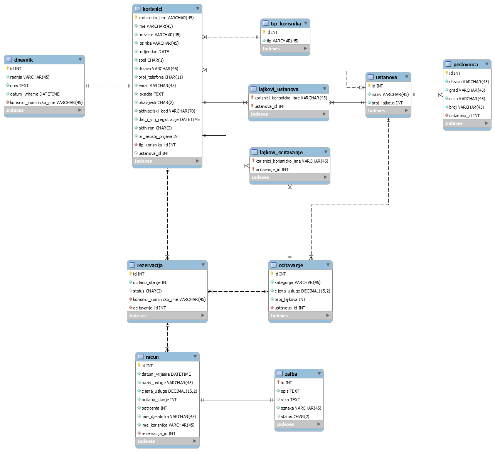

Dokumentacija
Opis projektnog zadatka
Projektni zadatak bio je izraditi sustav koji omogućava korisnicima pregled nad računima svojih režija. U sustavu aktivno sudjeluju administrator, moderator (zaposlenik) i registrirani korisnik (potrošač). Administrator je zadužen za kreiranje ustanova i dodjelu moderatora za ustanove, pri čemu definira i adrese poslovnica za svaku od ustanova. Moderator nadgleda ustanovu te određuje kategorije očitavanja za pripadajuću ustanovu. Također ima kontrolu nad korisničkim rezervacijama očitavanja i žalbama korisnika, a za prihvaćene rezervacije ili žalbe može izdati račun. Registrirani korisnik može rezervirati očitavanje potrošnje, pregledavati račune te podnijeti žalbu za određeni račun.
Opis projektnog rješenja
Projektnom zadatku sam pristupao na način da sam prvo realizirao funkcionalnosti vezane uz registraciju i prijavu korisnika. U međuvremenu sam se odlučio za korištenje Smarty sustava predložaka, budući da znatno olakšavaju rad razdvajajući programsku logiku od prezentacije. Nakon realizacije registracije i prijave, implementirao sam funkcionalnosti vezane uz rad sustava kao što su straničenje, pretraživanje, virtualno vrijeme itd. da bih nakon toga prešao na realizaciju glavne teme projektnog zadatka, tj. funkcionalnosti vezane uz sustav za nadzor nad režijama.
ERA model
Navigacijski dijagram

Popis i opis korištenih tehnologija i alata
- HTML - markup jezik koji služi za izradu strukture web stranice
- CSS - stilski jezik koji služi za definiranje prezentacijskih svojstava web stranice
- Javascript - skriptni programski jezik koji se izvršava na korisničkoj strani u web pregledniku.
- PHP - skriptni programski jezik koji se izvršava na poslužiteljskoj strani, a služi za izradu dinamičnih i interaktivnih web stranica
- NetBeans - integrirano razvojno okruženje napisano u Java programskom jeziku
- phpMyAdmin - besplatan alat napisan u PHP-u, a služi za rukovanje MySQL i MariaDB bazom podataka
- Smarty - sustav predložaka napisan u PHP-u, a služi za razdvajanje programske logike od prezentacije
Popis i opis vanjskih modula/biblioteka
- jQuery - Javascript biblioteka namijenjena pojednostavljenju skriptiranja na klijentskoj strani
- jQuery UI - biblioteka za jQuery korisničko sučelje
Pogreške u radu
- pogreška kod učitavanja Google mapa za prikaz adresa poslovnica
- pogreška kod prikaza statistike pomoću canvas-a